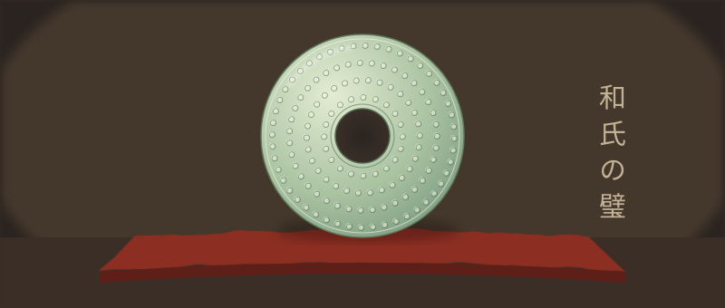
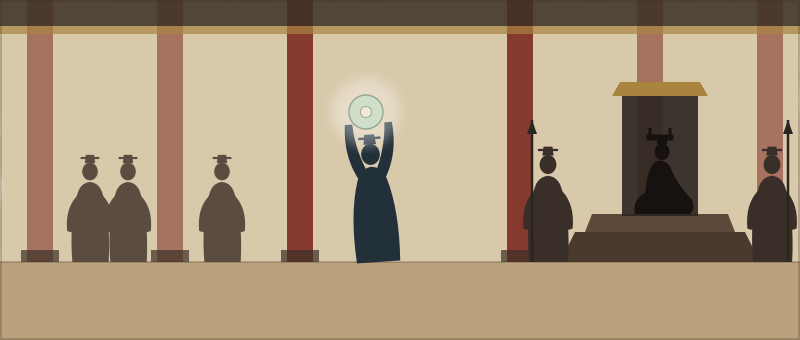
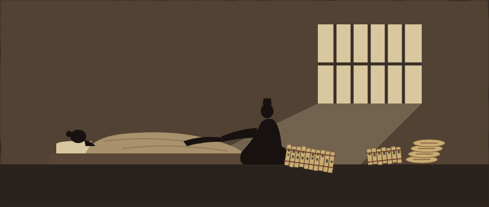
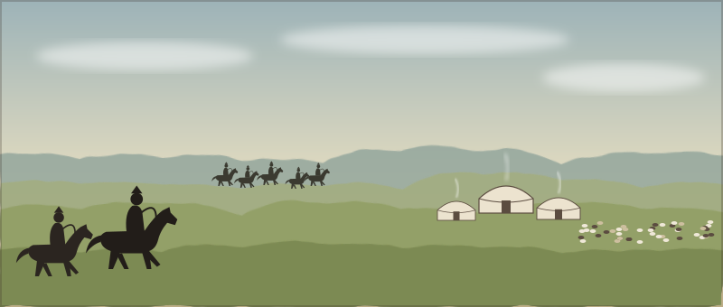
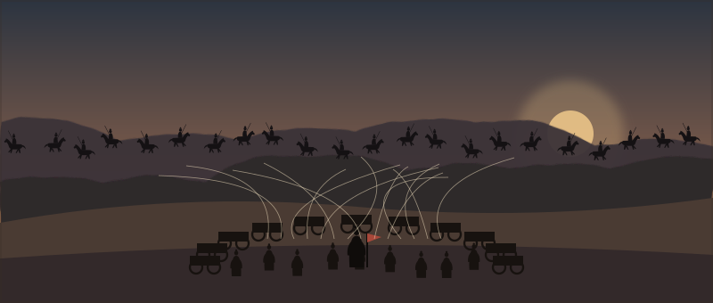
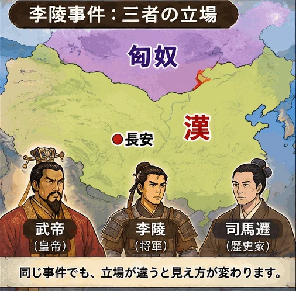
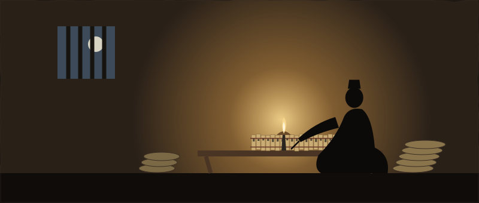
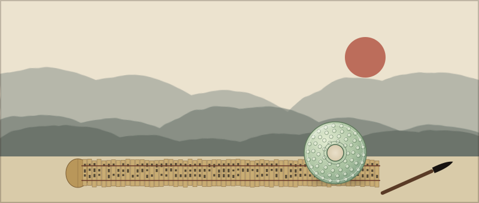

1秦王の申し出
願以十五城請易璧。
願はくは十五城を以て璧に易へんことを請ふ。
現代語訳を見る
どうか十五の城と璧とを交換させていただきたい。
味わいどころ城十五と、手のひらに乗る玉ひとつ。釣り合わないほど大きな数字を出すことで、璧の値打ちと、秦王の強引さの両方が一行で伝わる。ここから、非常に貴重な宝を「連城の璧」と呼ぶようになった。
句法「以A易B」＝AをBと取りかえる
『和氏の璧』から、中島敦『李陵』へ
地図、年表、選択式の問いを使いながら進みます。
約25〜35分／自分のペースで
趙の使者・藺相如は、強大な秦の王を相手に、国の宝である璧を守ろうとした。

彼の勇気や機転は、二千年以上も語り継がれている。けれど、少し考えてみよう。
この出来事を、後の世に書き残したのは誰だったのだろう。
その一人が、歴史家・司馬遷である。彼自身の人生にも、歴史書に書かれてよいほどの出来事があった。

『和氏の璧』の舞台は、いくつもの国が覇権を争った戦国時代。司馬遷が生きたのは、その後、秦の統一を経て漢という大帝国が成立した時代だった。



『和氏の璧』の舞台を実際の地図で見る。秦と趙の位置、都と都の距離、璧と藺相如が別々の道を通ったことを、一場面ずつ確かめよう。色の範囲は前283年ごろの各国のおおよその広がりで、国境線ではない。
できごとと言葉は『史記』廉頗藺相如列伝による。藺相如や従者が通った道の記録はなく、点線は当時の主な道筋にもとづく推定である。
秦の軍事力が強く、璧を渡しても約束の城が手に入らない恐れがあったから。『和氏の璧』の中で、藺相如はこの力の差をどう利用・克服しただろう？本文から根拠を探してみよう。
原文そのものの味わいは、すべての展示室を見終えたあと、最終展示室でじっくり読む。
勢力関係を切り替えてみよう
※領土の形や規模を表す地図ではなく、関係を理解するための模式図です。
司馬遷の父・司馬談は、過去の出来事をまとめ、一つの歴史を著そうと願っていた。しかし、完成させる前に病に倒れる。

父の志を受け継いだ司馬遷は、古い記録を調べ、各地を訪ね、多くの人物の事績を集めた。『史記』は、王の事績だけでなく、将軍、思想家、商人など、多様な人々を描いている。


なぜ、王や皇帝以外の人々まで書いたのだろう。
漢の武帝は、北方の匈奴と戦争を重ねた。匈奴は単なる「悪役」ではなく、独自の政治や社会を持つ強力な遊牧勢力だった。

匈奴はモンゴル高原を中心に広がった遊牧諸集団の連合体。草原・砂漠・オアシス・農耕地帯がつながる世界を見よう。
生態帯と位置関係の模式図。ゴビ砂漠や河西回廊の形、長安の座標、当時の勢力範囲を精密に示すものではありません。
交易や贈与で必要な物資が得られ、漢の軍事的圧力も弱いなら、戦争より和平が利益になることもある。攻撃は常に不可避だったわけではない。どんな条件が変わると選択も変わるだろう？
双方に安全保障や勢力維持の事情があった。漢から見れば国境を脅かす相手でも、匈奴から見れば漢の遠征が脅威となり得た。
「敵国に降伏した将軍」は、必ず裏切り者なのだろうか。
ここでは答えを急がない。李陵という人物の運命を知ってから、もう一度考えよう。
紀元前2〜1世紀。西ではローマが地中海世界に勢力を広げ、東では漢が中国大陸を統治していた。その北には、現在のモンゴルを中心とする草原地帯に匈奴の政治的連合があった。草原は「何もない辺境」ではなく、馬・家畜・交易路・人々の移動が結びつく広大な世界だった。
いつの世界を見る？
四つの縮尺は一枚の同じ地図であり、指やマウスで自由に動かせる。地点の印を押すと説明が出る。「現代の地図」はインターネット接続が必要。
上で選んだ時代について、五つの地域を横に見わたす。同じ時代に起きたことと、実際につながりがあったことは別である。それぞれの関係がどちらにあたるかを、下の札で確かめよう。
前300年から後300年まで。藺相如、司馬遷、そして日本列島が中国の歴史書に現れるまでを、同じものさしの上に置いた。旗を押すと、その時代の地図に切り替わる。表は横に動かせる。
年代は目安。弥生時代の始まりは年表の左端より前で、時期には諸説がある。国や王朝の交代は、実際には何年もかけて進んだ。卑弥呼の使いは238年とする説もある。
地図で見た土地の、現在の姿。写っているのは今の風景であり、古代の人や建物ではない。


紀元前99年。漢の将軍・李陵は少数の歩兵を率いて匈奴軍と戦い、激戦の末に降伏した。都では敗北と降伏が問題になり、武帝の怒りを招いた。
司馬遷は、李陵が勇敢に戦ったことや置かれた状況を踏まえて弁護した。しかしその発言は皇帝の怒りを買い、司馬遷は罪に問われた。


実際の地形の上で、軍の移動と知らせの伝わり方を一場面ずつ追う。場面ごとに、三人がそのとき何を知っていたかを見くらべよう。
地点・兵数・できごとは『漢書』（李陵の伝・司馬遷の伝）と司馬遷「報任安書」による。李陵軍や匈奴軍が実際に通った道、浚稽山や降伏地点の正確な位置は分かっていない。点線と点線の円はすべて推定であり、史実として確定したものではない。
二千年前の出来事の舞台を、現在の写真で見る。


李陵は戦場の状況を知る一方、皇帝と司馬遷は報告に頼った。逆に李陵には、都での政治的影響を見通せなかった可能性がある。三人が同じ情報を持っていたら、判断は変わっただろうか？
あなたが司馬遷なら、どうするだろう。
史実の経緯は主に『漢書』「司馬遷伝」や司馬遷の「報任安書」などから知られます。人物の内面を断定できるわけではありません。
司馬遷は投獄され、宮刑という極めて重い屈辱を受けた。死を選ぶことも考えたが、歴史を書く仕事を完成させるために生きる道を選んだ、と「報任安書」に記している。

宮刑は男性の生殖器を損傷・切除する刑罰で、回復できない身体的被害を伴った。
漢代の社会では、身体を父母から受け継いだものとみなす観念や、子孫を残すこと、男性官僚としての名誉が重んじられた。宮刑は身体への暴力であるだけでなく、当時の規範のもとで強い社会的烙印を伴った。司馬遷自身も『報任安書』にその苦悩を書いている。
これは古代社会の価値観を説明するものであり、身体の状態や生殖能力で人間の尊厳が決まるという意味ではない。
父から継いだ著述を完成させ、後世に残すためだった。『報任安書』を読むと、屈辱を受けながら生きることと、著作を残す使命とが結びついていたことが分かる。
人固有一死、或重於泰山、或軽於鴻毛。
人は誰でも一度は死ぬ。その死には、泰山より重いものもあれば、鳥の羽毛より軽いものもある。
『報任安書』より。現代語訳は学習用の意訳。
これは「死ねばよい」という言葉ではない。生きることも死ぬことも、何のために選ぶのか。その意味を司馬遷は問い続けた。


彼にとって『史記』は、どのような存在だったのだろう。
藺相如は、強国・秦の王に向かって自らの使命を果たそうとした。司馬遷もまた、強大な皇帝の前で、自分の考えを述べた。

けれども二人の立場は同じではない。藺相如は外交使節として国の利益を守り、司馬遷は宮廷で将軍の評価をめぐって発言した。結果も異なる。
距離は直線の目安。表は読みを深めるための整理であり、二人の優劣を決めるものではない。
藺相如の旅の道のりも、それを書き残した司馬遷の生涯も知ったいま、原文に戻ろう。『史記』廉頗藺相如列伝から。まず白文（もとの漢字だけの文）をながめ、書き下し文を声に出して読み、それから訳と解説へ進もう。漢文のおもしろさは、少ない字数で場面と気持ちを立ち上がらせるところにある。
願以十五城請易璧。
願はくは十五城を以て璧に易へんことを請ふ。
どうか十五の城と璧とを交換させていただきたい。
味わいどころ城十五と、手のひらに乗る玉ひとつ。釣り合わないほど大きな数字を出すことで、璧の値打ちと、秦王の強引さの両方が一行で伝わる。ここから、非常に貴重な宝を「連城の璧」と呼ぶようになった。
句法「以A易B」＝AをBと取りかえる
欲予秦、秦城恐不可得、徒見欺。
欲勿予、即患秦兵之来。
秦に予へんと欲すれば、秦の城は恐らくは得べからずして、徒らに欺かれん。
予ふること勿からんと欲すれば、即ち秦兵の来たらんことを患ふ。
秦に与えようとすれば、城はおそらく手に入らず、ただだまされるだけだろう。与えまいとすれば、秦の軍が攻めてくるのが心配だ。
味わいどころ「欲予」と「欲勿予」。同じ形の文を二つ並べて、どちらを選んでも困るという板ばさみを、説明ぬきで見せている。漢文は、こうした対（つい）の形で考えを整理する。声に出すと、行ったり来たりする迷いのリズムが分かる。
句法「見」＝受け身（〜される）
城入趙而璧留秦。
城不入、臣請完璧帰趙。
城 趙に入らば璧は秦に留めん。
城入らずんば、臣請ふ璧を完うして趙に帰らん。
城が趙の手に入るなら、璧は秦に置いてまいります。城が手に入らないなら、私が璧を傷ひとつなく守って趙に持ち帰りましょう。
味わいどころ起こりうる場合を二つに分け、それぞれの結果を短く言い切る。迷っていた王や大臣たちの言葉と比べると、藺相如の頭の中がどれほど整理されているかが分かる。「完璧」はここから生まれた言葉。もとは「璧を完（まっと）うす」、つまり「璧を無事に守りとおす」という動作を表していた。
句法「不〜」を「〜ずんば」と読む仮定
璧有瑕、請指示王。
璧に瑕有り、請ふ指して王に示さん。
璧に傷がございます。指さして王様にお見せいたしましょう。
味わいどころたった七文字。怒りも非難も口にせず、相手が自分から璧を手渡すように仕向けている。強い言葉が出てくるのは、璧を取り戻したあとである。短い文ほど、言わなかったことの大きさを読む楽しみがある。
句法「請フ〜ン」＝自分がすることの申し出
相如因持璧却立、倚柱、怒髪上衝冠。
相如因りて璧を持ち却立して、柱に倚り、怒髪上りて冠を衝く。
相如はそこで璧を持ったまま後ずさりして立ち、柱に寄りかかり、怒りで逆立った髪が冠を突き上げた。
味わいどころ持つ・退いて立つ・寄りかかる。動作を表す字が、切れ目なく三つ続く。形容の言葉はほとんどなく、動きだけで緊張を描いている。最後に「髪が冠を突き上げる」という大きな誇張が来る。激しい怒りを言う「怒髪天を衝く」のもとになった表現。『十八史略』では「怒髪指冠（怒髪 冠を指す）」と書かれる。
句法動詞を重ねて場面を描く
臣頭今与璧倶砕於柱矣。
臣の頭は今 璧と倶に柱に砕けん。
私の頭は、いまこの璧といっしょに柱で砕けるでしょう。
味わいどころ自分の頭と璧を「倶に」の一字で結び、同じ重さのものとして差し出している。文末の「矣」は、きっぱり言い切る気持ちを表す字で、読まないが、文の強さを支えている。置き字にも役目があることが分かる一文。
句法「与A倶」＝Aといっしょに／置き字「矣」「於」
秦亦不以城予趙、趙亦終不予秦璧。
秦も亦城を以て趙に予へず、趙も亦終に秦に璧を予へず。
秦も城を趙に与えず、趙も結局、璧を秦に与えなかった。
味わいどころ「秦亦〜、趙亦〜」と同じ形を二度くり返して、話を閉じる。どちらが正しかったか、藺相如がどれほど立派だったか、司馬遷はここでは書かない。起きたことを並べ、判断は読む人にまかせる。これが『史記』の書きぶりであり、中島敦の文章にも通じる簡潔さである。
句法対句（同じ形の文を並べる）
原文は『史記』によった。漢字は新字体に改めている。教科書によっては『十八史略』をもとにした短い本文が使われ、字句が異なることがある。書き下し文の読み方も、教科書によって少し違う場合がある。
ここで、二つの問い。
司馬遷が藺相如に自分を重ねたと断定する史料はありません。ここでの比較は、読みを深めるための問いです。

歴史の中の人物を描いた司馬遷自身も、また歴史に翻弄された一人の人間だった。
『史記』をもう一度開こう。
そして、次は中島敦の『李陵』へ。